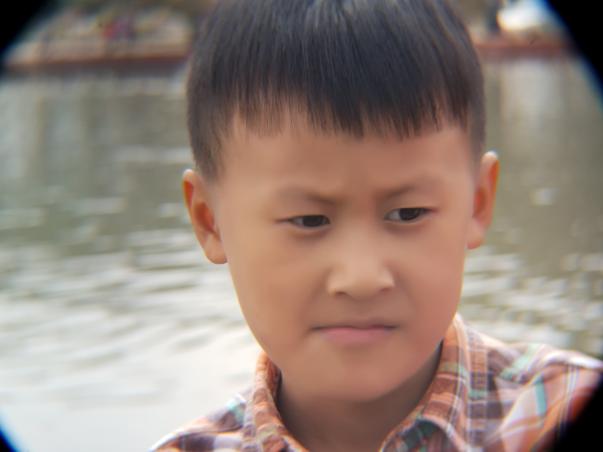
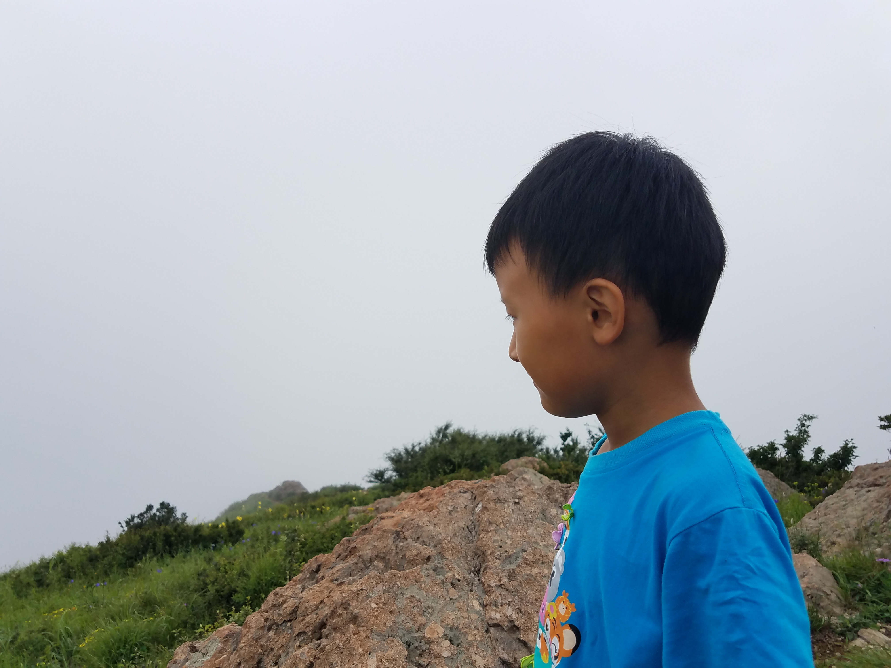
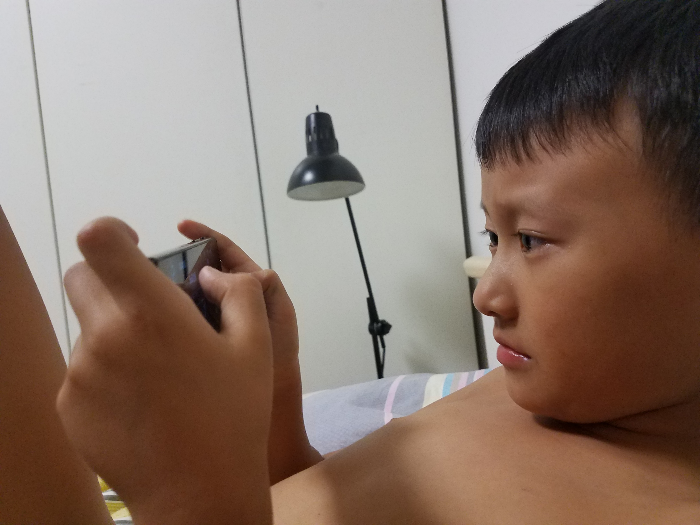
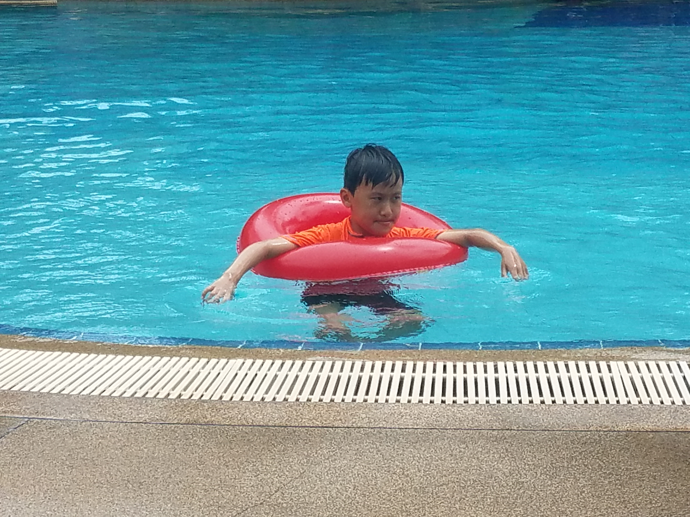
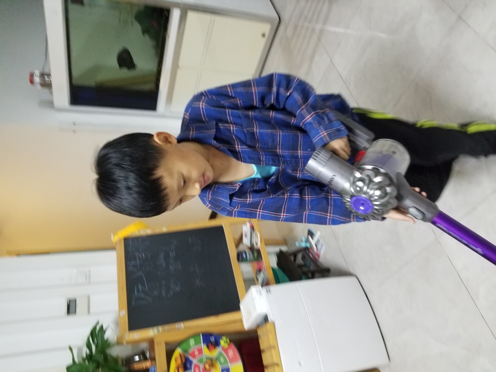
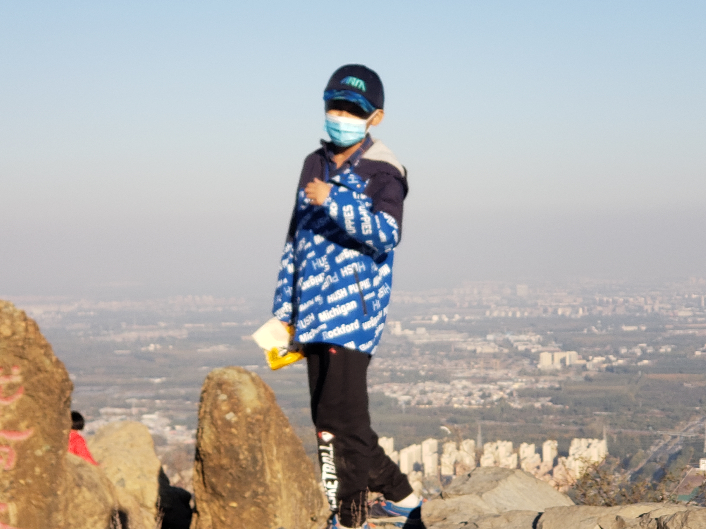

这次整理的不只是一段旅程，而是几年里慢慢累积起来的成长样子。海边玩沙时的专注、山路上回头的眼神、家里抱着吸尘器时的认真、傍晚河岸边张开双手的夸张动作，都让时间变得可以看见。
这些照片跨了 2017 到 2022，好像没有什么宏大的主题，却自然地连成了一条线。孩子在长大，表情在变，身体在抽高，面对镜头的方式也一点点从天真、调皮、专注，变成更安静、更自在、更有自己的节奏。
2017：海边、河岸和最自然的童年表情
2017 年留下了很多特别有“小时候”气息的画面。海边玩沙时整个人扑在白沙里，木屋露台上的回头一眼，河岸边踩着碎石朝镜头走来，还有小窗里探出头来的调皮神情，几乎每一张都带着不加修饰的轻松。那时候的镜头前，更多是本能地笑、本能地玩、本能地看向远处有什么新鲜东西。




山路上的蓝色 T 恤
同样还是 2017，山上的几张照片开始出现另一种气质。蓝色 T 恤在灰白天空和绿色山路之间特别显眼，孩子开始不只是玩，也会停下来看看山、看看远处、看看石头后面是什么。画面里有些雾，有些风，但神情已经和海边时不太一样了。




2018：一点点抽高，也一点点沉静
到了 2018，照片里的状态更丰富了。泳池里套着红色泳圈时还是十足的孩子气，绿色湖边站着的时候却明显安静下来，眼神里多了观察和停顿。家里拿着吸尘器那张又很可爱，像是认真进入自己的一个“小角色”。成长并不是突然发生的，它常常就藏在这些前后气质的变化里。



2020 到 2022：少年感慢慢出现
后面的几年，画面开始出现更鲜明的“少年感”。站在山顶时戴着口罩，也还是会挺直身体望向远处；河边夕阳下张开双手，动作变得更大更自信；穿着外套徒步时，已经明显从小朋友变成了少年。到 2022 年，戴着草帽和口罩站在泳池边，或者在温泉池里低头整理泳镜，整个人都更自在，也更像在用自己的方式和世界相处。
